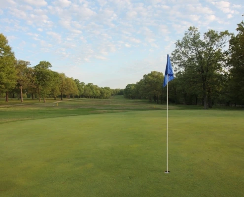
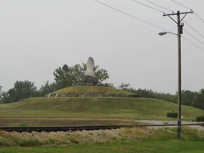
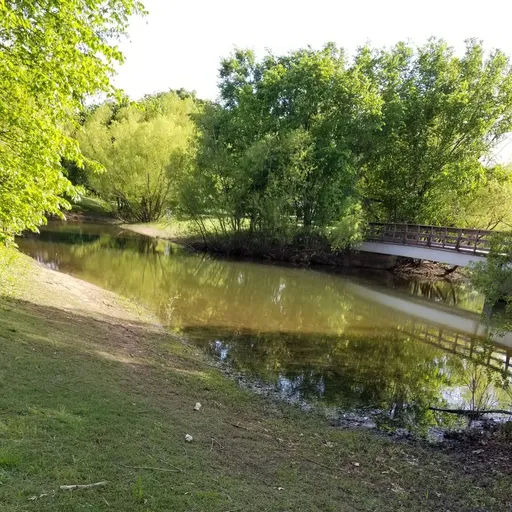
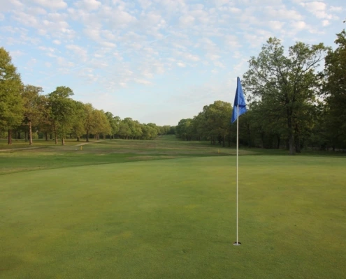
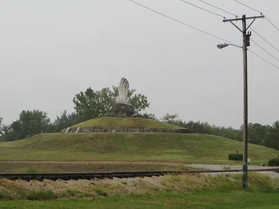
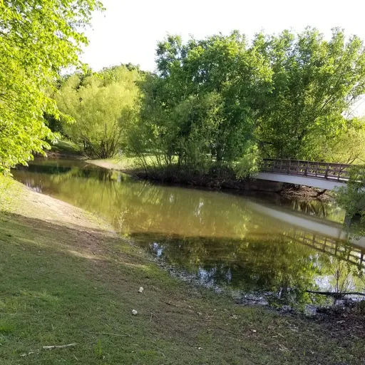

🤝🏼 Come join us for the chamber meet and greet Wednesday at 7:00 p.m.
Carl Junction Chamber of Commerce
Carl Junction
Overview
Located in Southwest Missouri just outside of Joplin and not far from the Kansas border, Carl Junction is a calm and pleasant town with a welcoming atmosphere. It features a high school, community center, and other amenities. Its close proximity to Joplin means you can have the small-town atmosphere while still having access to your big-city needs. The Briarbrook neighborhood and golf course is a quiet and lovely place to live, and Bulldog Lake means fishing opportunities are right nearby!
Carl Junction was created to be a waystation for the railroad, and was laid out next to a rail road junction by German immigrant Charles Skinner who gave it his old german surname, "Carl". A post office has been operatiing in Carl Junction since 1878; however, the exact date of founding is unknown.
Carl Junction has a recent history of violent tornadoes. The city was struck by an F3 tornado on May 4, 2003. On May 22, 2019, the city was hit with an EF3 tornado, causing damage to several buildings. (Wikipedia)


 




